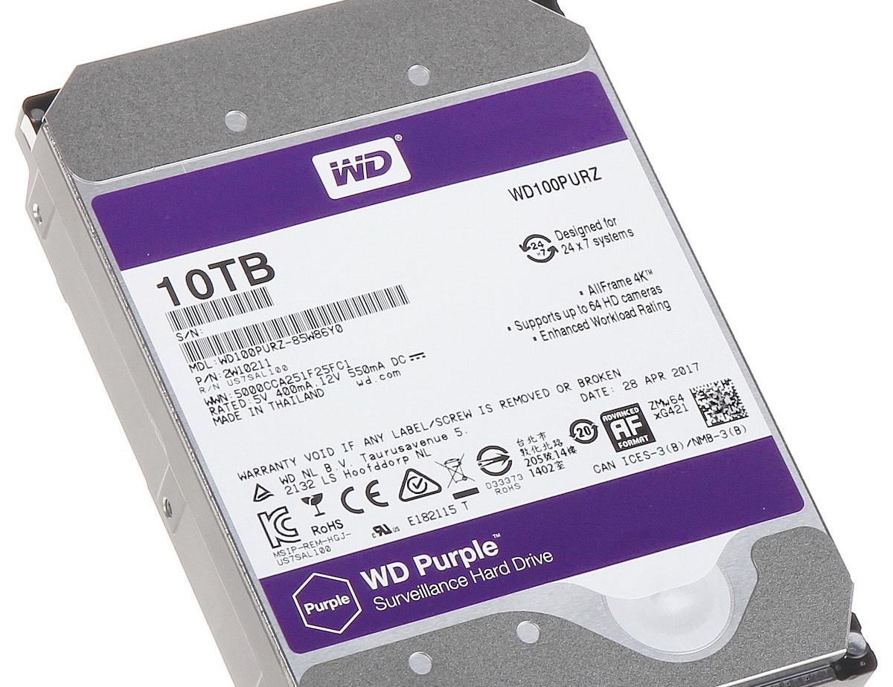
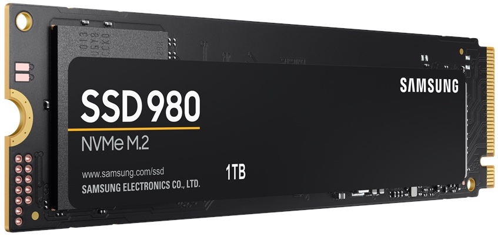

Lagring
I lagringsenhetene legger du alle filer og programmer du ønsker å ta vare på inni PCen. Det finnes hovedsakelig to typer lagrinsenheter, SSD og HDD.
HDD, også kalt harddisk, er den eldre måten å lagre ting på. Her lagres data i form av flekker på en magnetplate. Flekkene er ordnet i et system av spor og sektorer og skrives og leses ved hjelp av et antall skrive- og lesehoder. En ulempe med harddisken er at det tar lengre tid å åpne forskjellige ting man har lagret på den. På den andre siden får man mye mer lagrinsplass for pengene i forhold til SSD.
SSD, også kalt Solid State Drive, er den nyere måten å lagre på. SSD er elektronisk og skriving og lesing av data går mye raskere enn på en harddisk. I tillegg, siden SSD ikke trenger å rotere magnetplater og flytte lese/skrivehodet lager den mye mindre støy og bruker mindre energi enn HDD. Likevel er SSD dyrere å lage, og man får mye mindre lagringsplass for pengene i forhold til harddisken.
